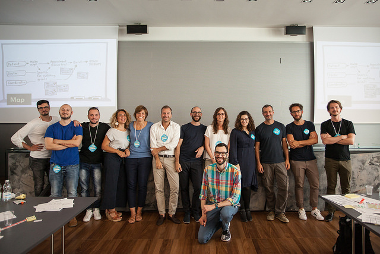
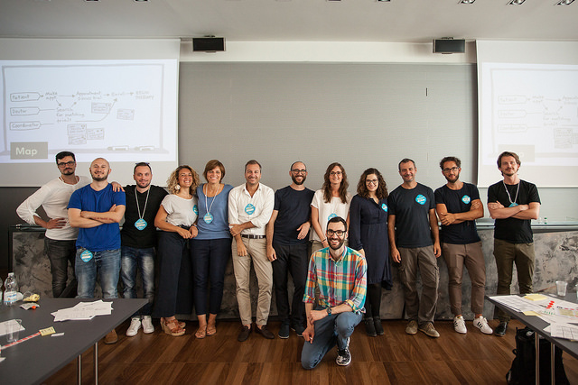

LIMA, NOVIEMBRE DEL 2017
LIMA, NOVIEMBRE DEL 2017
trabajando juntos en un sprint, podrás acortar el ciclo interminable de debate y comprimir meses de trabajo en una sola semana. En lugar de esperar a tener que lanzar un producto para enteder si esa idea fue buena, aquí obtendrás datos claros de un protipo realista. El sprint te da un superpoder: porás avanzar rápido hacia el futuro para ver tu producto terminado y la reacción del cliente antes de llevar a cabo algún compromiso costoso.
El sprint es un proceso de 5 días que busca responder cuestiones empresariales críticas a través del diseño, creación de prototipos y la prueba de ideas con clientes. Desarrollado por Jake Knapp, es uno de los "Grande Éxitos" de la estrategia empresarial, la innovación, la ciencia del comportamiento, el design thinking y más; todo está empaquetado en un proceso de prueba de batalla que cualquier equipo puede utilizar.
En este intenso workshop de un día, aprenderás a estructurar un Design Sprint en tu organización tal como Google Ventures lo hace con compañías como Nest, Flatiron Health, y Medium para ayudarlas a entrar a nuevos mercados, a diseñar nuevos productos, a desarrollar nuevas características para millones de usuarios, a definir estrategias de marketing, entre muchas otras cosas más.
YOUR TICKET INCLUDES
8-hour workshop facilitated by Jake Knapp
2 coffee breaks with snacks refreshments
Lunch with vegetarian options
All materials and office supplies for you to sketch and map ideas
PLEASE BRING
Your laptop and devices
Your motivation to tackle new challenges and collaborate with others
LOCATION
The Design Sprint workshop
will be held at the Camplus
Bononia in Bologna, Italy.
HOW TO GET THERE
car
Take the Bologna freeway exit number 11 "Bologna Centro/San Vitale". Take Via Massarenti, then Via Rimesse on the right and turn left in Via Sante Vincenzi. There’s a small parking area inside the location or you can park in the streets nearby.
Train and bus
You can reach the Camplus Bononia from the railway station using a combination of buses ( number 37, 99 and 89, or number 36 and 14).
Plane
The nearest airport is Bologna BLQ. You can take the shuttle to the railway station and move from there with buses.
Attended the workshop? Relive it through the photos we've taken.


 

JAKE KNAPP
Jake Knapp is a design partner at Google Ventures and author of the New York Times bestseller Sprint.
In 2010, Jake created the Design Sprint process. He has since run it over 150 times with teams at Google and with startups like Nest, Slack, 23andMe, and Flatiron Health. Today, teams around the world (including the British Museum and the United Nations) use Design Sprints to solve big problems and test new ideas.
Previously, Jake helped build products like Gmail, Google Hangouts, and Microsoft Encarta. He is currently among the world’s tallest designers